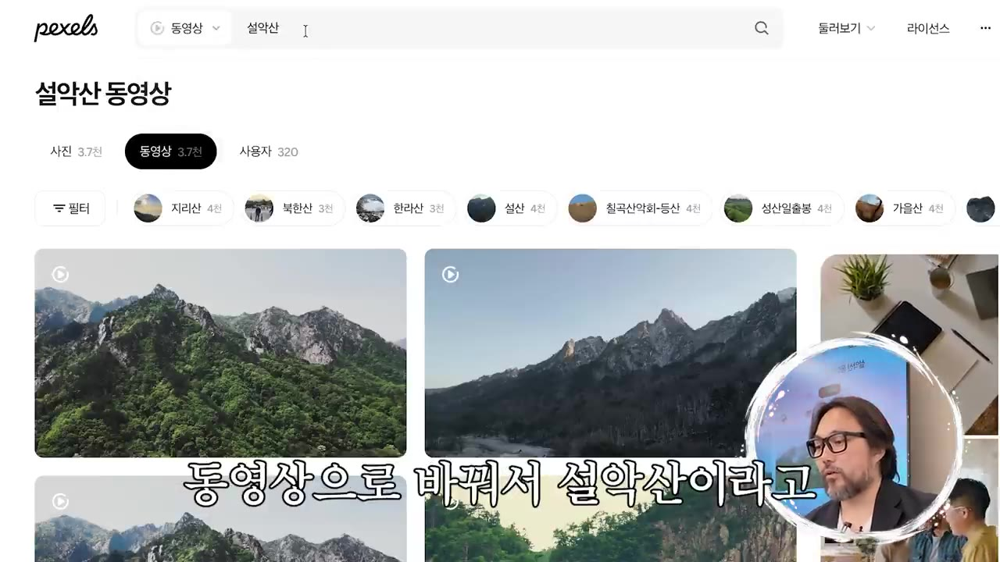

유료강의 듣지마세요. 해외반응 유튜브 구독자 0명으로 월300만원 버는 법 다 알려드림 (26년 최신판)
🎙️ 자막 대신 영상 음성을 받아써서 정리 (ko (음성 받아쓰기·GPU))
▶ 원본 영상 보기한눈에 보기
- 해외반응 유튜브는 외국인이 한국 문화를 겪는 원본 영상에 한국어 나레이션과 자막을 입힌 콘텐츠입니다. 강사는 얼굴 노출이나 촬영 없이 첫 달 1,060만 원, 6개월 차 약 5,000만 원을 벌었다고 주장합니다.
- 핵심 3원칙은 세 가지입니다. ① 구독자는 적은데 조회수가 높게 나온 검증된 소재만 다룹니다. ② 잘된 영상에서 10%만 바꿉니다. ③ 편집은 자막과 나레이션에만 힘을 씁니다.
- 제작은 7단계입니다. 채널명·로고(GPT) → 알고리즘 길들이기(새 계정으로 노다지 채널 30~50개 구독) → 썸네일 각 → AI 대본(Claude) → 재료 3가지(Vrew 음성·자막, 원본 영상, Pexels 배경) → CapCut 편집 → 업로드 후 48시간 분석입니다.
- 썸네일 교체 기준은 노출 클릭률(CTR)입니다. 10% 이상이면 그대로 두고, 8~10%면 지켜보고, 8% 미만이면 교체합니다.
- 영상 끝부분(53분~)은 편집을 자동화하는 자체 AI 프로그램 홍보이며, 무료 강의 신청으로 이어집니다.
이런 분께 도움이 됩니다
- 얼굴 노출이나 촬영 없이 유튜브 조회수 수익을 내 보고 싶은 초보자
- 해외반응 채널이 소재를 찾고 대본·편집을 어떻게 하는지 실제 작업 순서를 알고 싶은 분
- 업로드 후 스튜디오 지표를 보고 썸네일을 언제 바꿔야 할지 기준이 필요한 분
핵심 내용
강사 이력: 실직자에서 누적 17억까지 (3:21)
러시아에서 여행 가이드로 일하던 강사는 코로나로 일을 잃고 유튜브를 시작했습니다. 처음에는 실패했지만, 두 번째로 시작할 때 터지는 주제를 고르는 법을 깨달았다고 말합니다.
- 첫 도전 실패
- 빚과 재시작
- 첫 명당 발견
- 같은 소재 반복
- 6개월 차
- 현재(6년 차)
- 1첫 도전 실패
2020년 6월 10일 첫 업로드. 직접 찍은 축구 영상 6개 모두 조회수 십몇~백몇 회에 그쳐 그만둠 (4:31)
- 2빚과 재시작
요식업까지 망해 빚이 1억을 넘었는데 아이가 생겨 생계 때문에 다시 시작 (5:27)
- 3첫 명당 발견
2021년 4월 윤여정 오스카 수상 해외반응. 첫 영상 약 20만 회, 첫 달 누적 조회수 341만 회, 수익 1,060만 원 (6:23)
- 4같은 소재 반복
윤여정 관련 영상만 계속 올려 이 소재로만 최소 1,000만 원 (11:46)
- 56개월 차
조회수 1,447만 회, 월 36,846달러(약 5,000만 원) (12:10)
- 6현재(6년 차)
채널 10여 개, 누적 구독자 258만, 누적 수익 약 17억 원 (7:49)

- 증빙으로 세 가지를 보여 줍니다. 계좌 입금 내역(2025.5.26~8.25, 4개월간 2억 4,400만 원), 국민은행 외화 매입 증명서(같은 기간 178,767달러), 국세청 부가세 과세표준 증명(18억 660만 원)입니다. 2026년 상반기 6개월 수익은 4억 30만 원이라고 합니다.
💡 열심히 만드는 것보다 잘 터지는 주제를 고르는 것이 중요하다는 게 강사의 결론입니다.
지금 해외반응을 해야 하는 이유 (9:28)
강사는 돈 한 푼 없이 다시 시작한다면 해외반응을 고르겠다고 말합니다. 초보가 조회수 수익을 가장 빨리 내는 주제라는 이유입니다.
- 고점이 높다: 4개월에 2억 원 이상을 벌었다는 근거를 듭니다.
- 오래간다: 6년째 지금도 월 3,000만~5,000만 원을 번다고 합니다.
- 블루오션: 한국에 아직 잘 알려지지 않은 방법이라는 주장입니다.
- 소재가 끝없이 나온다: K컬처 열풍으로 외국인이 계속 한국을 찾고 영상을 올리기 때문입니다(예: 청계천을 찾는 여러 나라 사람들, 뉴욕에서 새벽 1시까지 곰탕 먹으려고 줄 서는 현상).
- 명당(잘 팔리는 주제): 이것을 찾아 빨리 차지하는 게 전부라고 말합니다. 축구를 좋아하면 손흥민, 야구면 이정후, 연예면 BTS를 다루면 된다고 합니다. 손흥민 첫 영상이 200만 회를 넘어 영상 하나로 수익 창출 조건을 채웠고, 한 달간 같은 소재로 8개를 올려 그 채널로만 2,000만 원 이상을 벌었다고 합니다.
| 소재('코인') | 조회수 | 수익 |
|---|---|---|
| 미국 태권도 도장 | 53만 | 약 111만 원 |
| 한국 문화 | 74만 | 305만 원 |
| BTS | 38만 | 129만 원 |
| 한국 스포츠(최근) | 27만 | 23만 원(자막상 불분명) |

- 제작 난이도에 대해서는 원본 영상을 틀어 놓고 음악을 깔고 흐름대로 설명했을 뿐이라고 말합니다(태권도 영상 예시).
수강생 사례: 피자집 사장님 (16:35)
유튜브를 전혀 모르던 피자집 사장님이 강사의 노하우를 그대로 적용해 현재 월 1,500만 원을 꾸준히 번다고 합니다. 누적 수익은 약 1억 2,000만 원입니다(영상 속 주장).
해외반응 유튜브의 정석 3원칙 (17:50)
| 원칙 | 내용 |
|---|---|
| ① 검증된 레퍼런스만 | '구독자 2,000명에 조회수 30만'처럼 구독자 대비 조회수가 높은 영상의 소재만 씁니다. 구독자 50만에 30만 회는 검증된 것이 아닙니다 |
| ② 새로운 것 금지, 10%만 변경 | 초보는 무엇이 터질지 모릅니다. 잘된 소재 안에서 각도만 조금 바꿉니다(윤여정 수상 → 의상 → 미국 연예인의 반응) |
| ③ 편집에 힘주지 않기 | 화려한 편집은 필요 없고 자막과 나레이션만 신경 씁니다 |

💡 초보가 실패하는 이유는 노력이 부족해서가 아니라 검증되지 않은 새 주제를 고르기 때문이라고 말합니다.
썸네일 각 잡기: 10% 법칙 (29:47)
'썸네일 각'은 이미 관심이 검증된 소재에 새로운 포인트 하나(10%)를 더하는 기획입니다.
- 윤여정의 여러 소식(의상, 만난 사람) 가운데 '윤여정이 보여 준 한국인만의 습성'으로 각을 잡아 20만 회가 나왔다고 합니다.
- 갓탤런트 → 태권도 공연으로 우승한 것
- 안젤리나 졸리 → 손목의 한글 문신('한글 사인'으로 언급)

💡 같은 한국 반응 소재라도 포인트 10%가 다르면 전혀 다른 영상이 됩니다. 실력은 직접 해 보면서 는다고 합니다.
업로드 후 48시간: 스튜디오 지표 읽기 (46:55)
강사가 운영하는 롱폼 채널을 예로 듭니다. 최근 28일 조회수 797만, 예상 수익 약 6,000달러입니다.
| 지표 | 의미·예시 |
|---|---|
| 조회수 추세 | 업로드 약 5시간 만에 7만 회. 그래프가 계속 오르면 사람들이 보는 중이고, 꺾이면 썸네일 교체를 검토합니다 |
| 시청 시간 | 2,900시간 |
| 도달 범위 · 노출 클릭률(CTR) | 노출 16만, 조회 7만, CTR 14.6%(처음에는 19%). 자리 잡은 채널이라서 나오는 높은 수치라고 합니다 |
| 평균 시청 지속 시간 | 13분 영상 중 평균 5분. 조회 1회당 단가가 시청 지속 시간으로 정해지므로 '목숨을 걸어야 하는' 지표라고 합니다 |

초보 채널의 썸네일 교체 기준 (해외반응 카테고리 한정)
| 노출 클릭률 | 판단 |
|---|---|
| 10% 이상 | 좋은 신호. 그대로 둡니다 |
| 8~10% | 일단 지켜봅니다 |
| 8% 미만 | 썸네일을 교체합니다 |
- 조회수가 안 나올 때는 네 가지를 점검합니다. CTR, 시청 지속률, 썸네일과 내용이 맞는지, 시장성이 있는지입니다.
- '네 번째 영상이 터진다': 숫자 4 자체보다는 끊지 않고 계속 올리는 것이 핵심이라는 뜻입니다. 한 영상이 터지면 이전 영상의 조회수도 함께 끌어올린다고 합니다.
💡 업로드 후 48시간이 썸네일을 둘지 바꿀지 판단하는 골든타임입니다.
편집 자동화 AI 프로그램 (53:15) — 홍보 파트
수작업으로 영상 한 편에 약 6시간이 걸리는데, 자체 프로그램으로 10분이 된다고 주장합니다. 소개한 기능은 다음과 같습니다.

- 해외 원본 찾기:
Korea travel vlog,first time in Korea같은 키워드(어려우면 GPT로 영어 번역)를 넣고 수집하면, 터질 가능성에 따라 원본 영상을 A·B·C 등급으로 추천합니다.

제작 시작: 원본 다운로드, 자막·타임스탬프 추출, 썸네일용 대표 화면 10장 추천, 대본 생성을 자동으로 처리합니다.
AI 나레이션: 버튼 하나로 음성을 생성합니다.
화면 소재 수집: 문단별 배경 영상을 자동으로 받아 영상 전체(예시는 9분)를 완성합니다.
정보는 고정 댓글 링크의 무료 강의에서 안내합니다(59:46). 가격과 구매 조건은 영상에 나오지 않습니다.
따라 해보기
준비물
- ChatGPT: 채널명 추천과 로고 이미지 생성
- 크롬 시크릿 창 + 새 구글 계정: 알고리즘 길들이기와 채널 개설용
- Claude: 강사는 Sonnet보다 Opus를 추천합니다. 여기에 '유튜브 도사 K-컨텐츠 프롬프트'(구독·댓글 후 고정 댓글로 신청)를 씁니다.
- Vrew: AI 나레이션과 자막 파일 생성. 자막에는 '부류'로 받아써져 있는데, 'AI 목소리로 시작하기' 메뉴로 보아 Vrew로 보입니다(보충).
- 4K Video Downloader: 원본 영상 다운로드
- Pexels: 배경 영상과 사진(자막에는 '픽셀즈')
- CapCut: 영상 편집
- 구글 번역기: 원본 출연자의 국적 확인
- 비용: 영상에서 각 도구의 요금은 언급하지 않습니다.
- 소요 시간: 수작업으로 영상 1편에 약 6시간(강사 언급)
단계별 방법
- 채널명 정하기
- 로고 만들기
- 시크릿 창 열기
- 채널 개설
- 인기순 검색
- 노다지 채널 구독
- 홈 피드에서 소재 고르기
- 원본 영상 추적
- 썸네일 각 잡기
- 1채널명 정하기
ChatGPT에 아래 문장을 입력해 받은 20개 가운데 해외반응 채널임이 바로 보이는 이름을 고릅니다(예시: '외국인의 눈') (20:06)

ChatGPT가 추천한 '해외반응 유튜브 채널명 20개' 목록 · ▶ 20:37 - 2로고 만들기
ChatGPT에서 '이미지 생성'을 누르고 아래 문장을 입력한 뒤 결과를 그대로 내려받습니다 (20:37)
- 3시크릿 창 열기
크롬 오른쪽 위 점 3개 → '새 시크릿 창'을 열고, 유튜브에 접속해 새 계정으로 로그인합니다 (22:30)
- 4채널 개설
'채널 만들기'에서 이름에 채널명을 넣고(핸들은 그대로 둠), 사진에 내려받은 로고를 넣어 만듭니다 (22:57)
- 5인기순 검색
해외 반응또는외국인 반응을 검색하고 오른쪽 위 '필터'에서 '인기도'를 고릅니다 (23:40)- '한국 문화를 경험한 외국인'의 원본을 쓴 영상 유형을 고릅니다(예: 한국 지하철을 탄 미국인)

유튜브에서 '해외반응'을 검색했을 때 나온 외국인 반응 영상들 · ▶ 24:09 - 6노다지 채널 구독
채널에 들어가 인기순으로 정렬한 뒤, 구독자는 적은데 조회수가 큰 채널을 구독합니다. 30~50개를 구독하면 길들이기가 끝납니다 (24:44)
- 예: '생생반응' 구독자 2만 명에 221만·98만·83만 회, '한국 찐반응' 구독자 3만 명에 131만·130만·110만 회
- 7홈 피드에서 소재 고르기
홈 화면에 뜬 영상 중 조회수 10만 회를 넘은 것만 후보로 삼고, 그중 조회수가 가장 높은 영상을 엽니다 (26:40)

채널 구독 뒤 홈 화면이 해외반응 영상으로 채워진 모습 · ▶ 25:44 - 8원본 영상 추적
영상 왼쪽 위나 설명란 '더보기'에 적힌 원본 출처를 복사해 유튜브에서 검색하고, 원본 채널을 소재 창고로 삼습니다 (27:31)

출처를 검색해 찾은 원본 채널 Max and Jacqueline의 설악산 영상 · ▶ 28:03 - 9썸네일 각 잡기
검증된 소재에 새로운 포인트 10%를 더할 기획을 정합니다 (29:47)
1단계에 입력할 내용
나 해외 반응 유튜브 시작하려고 해. 채널명 20개 추천해줘
2단계에 입력할 내용
유튜브 채널로고를 만들려고 해. 외국인의 눈이라는 채널이야. 한국 문화를 경험한 외국인의 반응을 소개하는 채널이야. 알맞게 만들어줘
- 스크립트 추출
- 출연자 정보 확인
- AI 대본 생성
- 나레이션 음성 만들기
- 음성·자막 내보내기
- 원본 다운로드
- 1스크립트 추출
원본 영상의 설명 '더보기'를 열고 맨 아래 '스크립트 표시'를 누른 뒤, 뜨는 전체 스크립트를 복사합니다. 영어든 한국어든 상관없습니다 (31:55)

원본 영상 설명란 아래의 '스크립트 표시' 버튼 · ▶ 32:30 - 2출연자 정보 확인
원본 설명란에 적힌 출신 국가를 구글 번역기로 확인합니다(예: 호주) (33:08)
- 3AI 대본 생성
Claude(Opus)에 도사 프롬프트를 넣고, 스크립트, 원본 링크, 한 줄 소재('설악산에 오른 호주 커플')를 붙여 실행합니다 (32:40)
- 결과물: 제목(예: "여긴 천국인가요? 설악산 하나에 말문이 막힌 호주 커플"), 후킹 구간 타임코드(예: 원본 16~26초), 도입부, 본문별 나레이션
- 4나레이션 음성 만들기
Vrew에서 '새로 만들기' → 'AI 목소리로 시작하기'를 누르고 나레이션 대본만 붙여넣습니다. 목소리를 고른 뒤(예시: '제피로스') '확인'을 누릅니다 (37:19)

Vrew 'AI 목소리 설정'에서 제피로스(Zephyr) 목소리를 고르는 화면 · ▶ 37:47 - 5음성·자막 내보내기
오른쪽 위 '내보내기'에서 오디오(모든 클립, mp3)를 한 번, 자막 파일(한국어)을 한 번 내보냅니다. 두 파일 이름은 같게 둡니다 (38:10)
- 6원본 다운로드
4K Video Downloader에서 원본 링크를 복사한 뒤 '링크 붙여넣기'를 누르면 다운로드가 시작됩니다 (38:47)
- 1프로젝트 만들기
CapCut에서 '+'(프로젝트 만들기)를 누릅니다 (39:46)
- 2후킹 구간 자르기
원본 영상을 타임라인에 끌어 놓고, 대본에 적힌 16초와 26초 지점에서
B키로 자릅니다. 위치를 찾기 어려우면 오른쪽 줌 슬라이더로 타임라인을 늘립니다 (40:39) - 3나레이션 붙이기
Vrew에서 내보낸 mp3와 자막 파일을 뒤에 넣으면 싱크가 맞은 채로 들어갑니다. 해당 나레이션 길이만큼 잘라 후킹 영상 뒤로 옮기고, 필요 없는 앞부분은 지웁니다 (41:37)

Vrew에서 내보낸 두 파일을 CapCut 타임라인으로 끌어 넣는 장면 · ▶ 41:39 - 4원본 구간 자막 넣기
'텍스트' → '기본 텍스트'를 끌어 원본 영상 위에 놓고 영상 길이만큼 늘립니다. 오른쪽 위 입력란에 대본의 한글 자막을 붙여넣습니다 (42:28)
- 크기를 줄이고 세 문장으로 나눕니다 → 아래쪽 노란색 스타일 버튼을 누릅니다 → '획'을 두껍게 → 위치를 조정합니다
- 5배경 영상 깔기
Pexels를 '동영상'으로 바꾸고 나레이션 문장 키워드(예:
설악산,단풍)로 검색해 내려받습니다. CapCut에 끌어 놓고 각 자막 길이에 맞춥니다 (44:16)
Pexels에서 '설악산'을 검색하고 동영상 탭을 연 결과 · ▶ 44:48 - 6나머지 구간 반복
같은 방식으로 본문을 이어 만듭니다. 영상에서는 인트로까지만 시연했습니다 (45:30)
- 7구간 지정 후 내보내기
시작점에서
I(인포인트), 끝점에서 아웃포인트 키를 누르고(자막에는 '5'로 나오나 보통O, 보충) 오른쪽 위 '내보내기'를 누릅니다 (46:00) - 8썸네일 만들고 업로드
영상에서 생략됨 (46:44)
- 948시간 지표 점검
스튜디오 '분석' 탭 → 영상의 분석 아이콘 → 조회수 추세, 도달 범위(CTR), 평균 시청 지속 시간을 확인합니다. CTR이 8% 미만이면 썸네일을 교체합니다 (47:26)
- 10꾸준히 업로드
1~3편에 터지지 않아도 4, 5, 6편을 계속 올립니다 (51:41)
따라 할 수 있는지 점검
- ✅ 바로 따라 할 수 있음: 채널명·로고 만들기, 시크릿 창에서 채널 개설, 인기순 검색과 노다지 채널 구독, 원본 출처 추적, 스크립트 추출, Vrew 음성·자막 내보내기, 4K Video Downloader 다운로드, CapCut 자르기·자막·배경 깔기
- ⚠️ 대본과 영상 재료 3단계 「AI 대본 생성」: 핵심인 '도사 프롬프트' 원문이 영상에 나오지 않고, 구독·댓글 후 고정 댓글이나 무료 강의로 받아야 합니다. 못 받으면 Claude에 "원본 스크립트를 바탕으로 제목, 후킹 구간 타임코드, 도입, 본문 나레이션을 써 줘"처럼 직접 요청해야 합니다(보충).
- ⚠️ 대본과 영상 재료 3단계: Claude Opus를 쓸 수 있는 요금제인지 영상에서 말하지 않습니다 → Claude 공식 사이트에서 플랜을 확인하세요(보충).
- ⚠️ 대본과 영상 재료 4·5단계 「나레이션 음성」: 프로그램 이름이 자막에 '부류'로 받아써져 정확하지 않습니다. 가입 여부와 무료 사용 한도도 나오지 않습니다 → 영상 37:19 화면에서 프로그램 이름을 확인하세요.
- ⚠️ CapCut 7단계 「구간 지정 후 내보내기」: 아웃포인트 키가 자막상 불분명('5') → 영상 46:10 화면에서 확인하세요. 내보내기 해상도 같은 설정값도 나오지 않습니다.
- ⚠️ CapCut 8단계 「썸네일 만들고 업로드」: 썸네일 제작 도구, 업로드할 때 제목·설명·원본 출처 표기 방법 모두 영상에서 생략됐습니다. 썸네일 노하우는 '다음 영상에서'로 미뤘습니다.
- ⚠️ CapCut 6단계 「나머지 구간 반복」: 본문 편집은 인트로 시연뿐이고, 원본 영상과 나레이션을 번갈아 배치하는 기준(얼마나 길게, 얼마나 자주)이 나오지 않습니다.
- ⚠️ 10분 자동화 프로그램은 무료 강의를 거쳐 안내되며, 가격과 이용 조건이 영상에 나오지 않습니다.
- ❓ 영상 초반에 "저작권, 계정 정지 노하우도 다 알려 준다"고 했지만, 실제 설명은 '원본만 틀고 자막만 붙이면 수익이 안 나니 배경 영상을 섞는다'가 전부입니다. 원본 채널의 허락이 필요한지는 다루지 않습니다.
- ❓ 알고리즘 길들이기용 새 계정과 실제 업로드 채널이 같은 계정인지 분명하지 않습니다. 시연에서는 같은 계정에 채널을 만들었습니다.
확인 방법
- 구독 몇 개 만에 홈 화면에 구독자는 적고 조회수가 높은 해외반응 영상이 줄지어 뜨면 길들이기가 된 것입니다.
- Vrew에서 mp3 한 개와 자막 파일 한 개가 같은 이름으로 나왔는지 확인합니다.
- CapCut에 두 파일을 넣었을 때 자막과 음성이 저절로 맞으면 정상입니다.
- 업로드 후 48시간 동안 CTR 10% 이상이면 썸네일이 통한 것입니다.
막히면
- 원본 영상을 그대로 틀고 자막만 붙이면 유튜브 가이드라인상 창작물로 인정받지 못해 수익이 나지 않는다고 합니다. 반드시 나레이션과 배경 영상·사진을 섞으세요.
- 홈 피드에서 조회수 10만 회 미만이거나 업로드한 지 오래되지 않아 조회수가 적은 영상(예: 이틀 만에 207회)은 소재에서 뺍니다.
- 새로운 주제를 직접 만들려 하지 말고, 잘된 소재에서 10%만 바꾸세요.
- 채널 개설에 일주일씩 쓰지 말고 5분 안에 끝내세요.
- 1~3편에 반응이 없어도 그만두지 마세요.
기억할 숫자·인용
- 첫 달(2021.4): 조회수 341만 회, 수익 1,060만 원 / 6개월 차: 1,447만 회, 36,846달러
- 누적 구독자 258만, 채널 10여 개, 누적 수익 약 17억 원(국세청 신고 기준 18억 660만 원)
- 2025.5~8(4개월): 2억 4,400만 원 입금, 178,767달러 / 2026년 상반기: 4억 30만 원
- 손흥민 해외반응 1,880만 회, BTS 809만 회, 불닭 954만 회
- 노다지 채널 30~50개 구독, 소재 기준은 조회수 10만 회 이상
- CTR 기준: 10% 이상 유지 / 8~10% 관찰 / 8% 미만 교체
- 수작업 약 6시간 → 자동화 10분(주장)
- "열심히 하는 게 중요한 게 아니라 잘 터지는 주제를 하는 게 중요하다."
- "AI 없이도 돈을 벌 수 있는 사람이 만든 AI 프로그램이어야 한다."
생각해볼 점
- (영상 내용) 수익 증빙은 강사 본인의 자료이고, 영상 자체가 무료 강의와 자동화 프로그램으로 이어지는 홍보 구조입니다. (내 의견) 강사의 수익은 2021년 선점 효과일 수 있고, 같은 방법을 따라 하는 사람이 많아질수록 '블루오션'이라는 주장은 약해집니다.
- (내 의견) 남의 원본 영상을 내려받아 쓰는 방식은 저작권 신고와 유튜브의 '재사용된 콘텐츠' 정책(보충)에 걸릴 위험이 있습니다. 영상은 배경 영상만 섞으면 된다는 수준으로 설명하므로, 시작하기 전에 유튜브 공식 고객센터에서 수익 창출 정책을 직접 확인하는 게 좋습니다.
- (내 의견) CTR 8%·10% 기준은 강사의 경험칙이며 해외반응 신규 채널에만 해당한다고 스스로 한정했습니다. 다른 카테고리에 그대로 적용하면 안 됩니다.
바로 해볼 일
- 크롬 시크릿 창에서 유튜브에
외국인 반응을 검색하고 인기도로 정렬해, 구독자는 적은데 조회수가 높은 채널 3개를 찾아보기 - 찾은 영상 하나의 원본 출처를 따라가 '스크립트 표시'로 스크립트를 복사해 보기
- 그 소재에 더할 '10% 새 포인트'를 썸네일 문구 한 줄로 써 보기